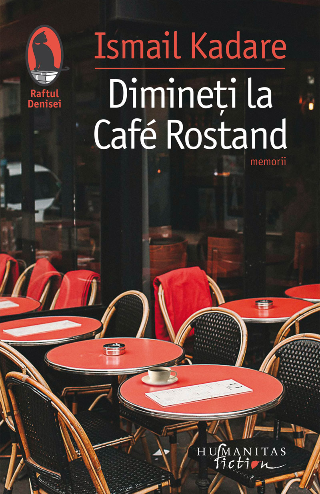
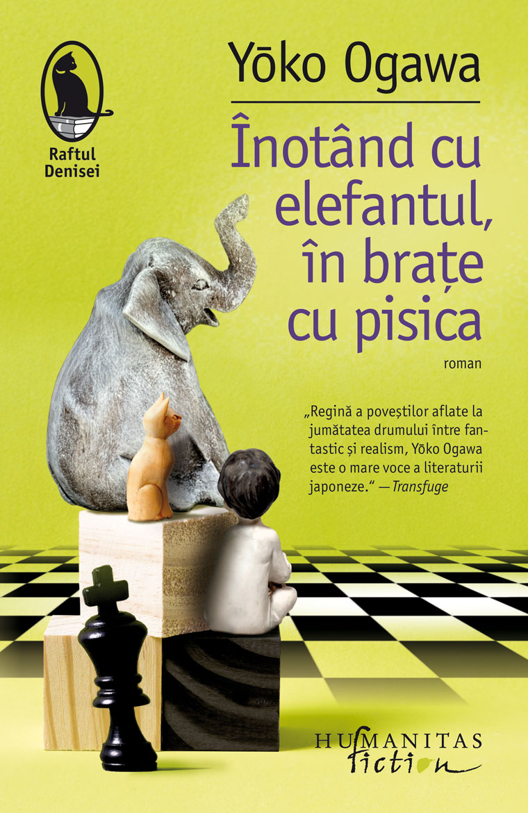
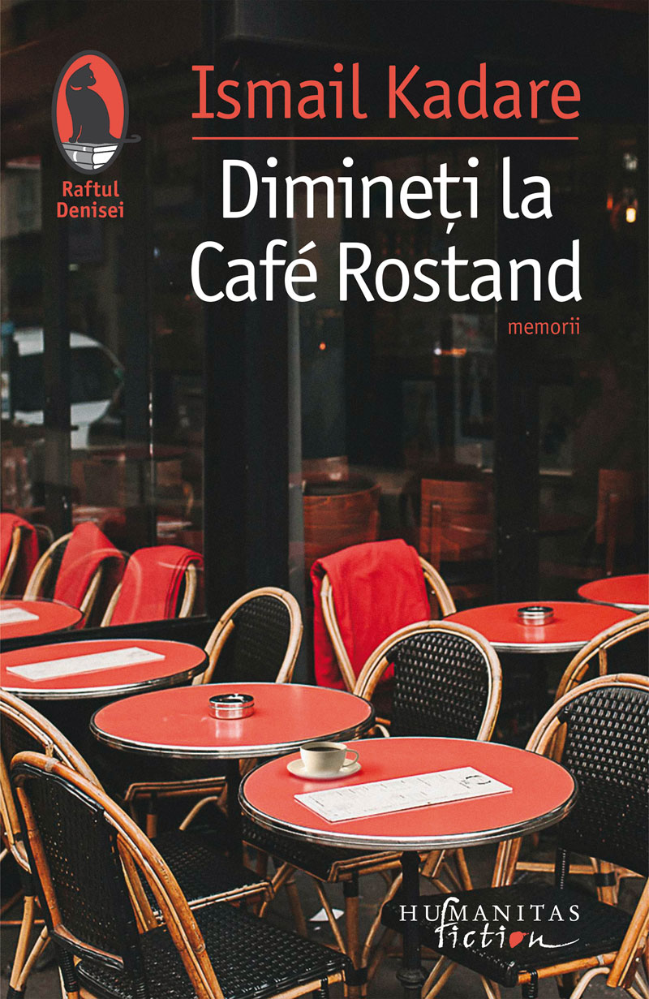
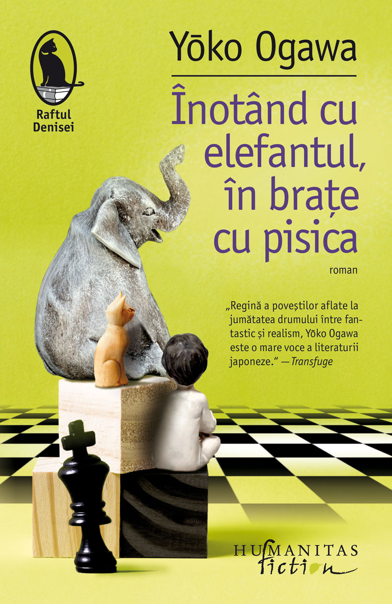

Casa Olandeză este o poveste despre iubire și sacrificiu, despre absență și generozitate,
despre puterea și magia unui loc care poate condamna, dar și vindeca.
„Splendidul roman al lui Patchett sondează, cu înțelegere și compasiune, adâncurile obsesiei și ale iertării;
ce dobândesc oamenii, ce păstrează, ce pierd sau înstrăinează și ce lasă în urmă.“
— Publishers Weekly
„Textura fină a romanului este alcătuită din multe momente mici, intime,
dar efectul este unul atotcuprinzător, uriaș și generos – profund emoționant.“
— New York Journal of Books
„Casa Olandeză are bogăția, forța aluzivă și încărcătura emoțională pe care le au doar cele mai bune ficțiuni.“
— Boston Globe
„Când citiți operele de ficțiune ale lui Patchett, așteptați-vă la miracole.“
— New York Times Book Review
La sfârșitul celui de-al Doilea Război Mondial, în urma unui pont primit pe patul unui spital de campanie, Cyril Conroy face o investiție genială, care îl va transforma într-un mogul imobiliar. Ca orice îmbogățit peste noapte, va cumpăra Casa Olandeză, unde se va muta împreună cu familia sa. „Visul american“ al lui Cyril Conroy se destramă însă, așa cum înainte se întâmplase cu cel al familiei VanHoebeek, primii proprietari ai casei, dar va fi reactivat de ambițiosul său fiu, Danny, și va fi împlinit cu succes de nepoata sa, May. Reușita lui Danny vine cu un preț: Maeve, sora lui, va renunța la propriile visuri, renunțare care vorbește despre sacrificiul pe care numai iubirea îl poate face posibil și îl legitimează.

 


